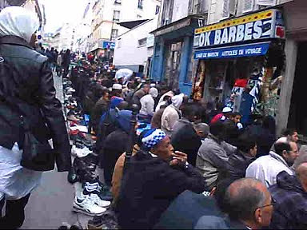
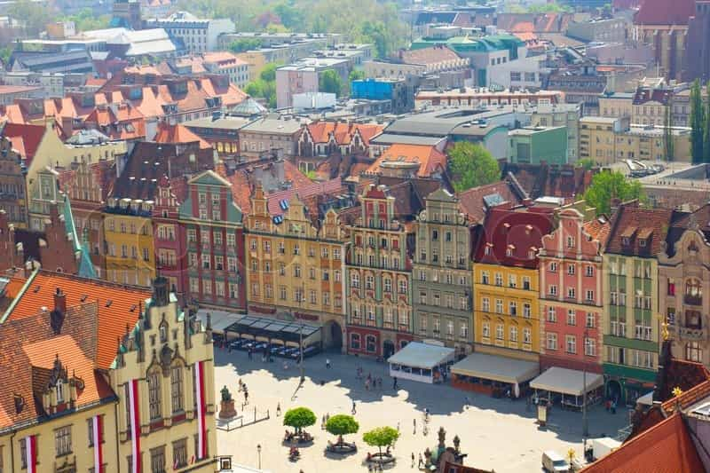

< < < Back
France Allows Large Muslim Population, Rewarded With Most Sophisticated Terrorist Attacks Since 9/11 – Return Of Kings
The shocking Islamic State terrorist attacks in Paris, coordinated across seven different areas, illustrates how France’s compulsive appeasement of Muslim migrants has not resulted in anything like social harmony. Rather, it has led to the most sophisticated assaults on civilians in the West since September 11. Despite the national government opening its doors (and wallets) to overwhelmingly Muslim North African, Sub-Saharan African and Middle Eastern new arrivals for decades, French over-tolerance is endangering the lives of its citizens, particularly its white and historically Christian population.
In Paris in January, the appalling executions of Charlie Hebdo staff, who satirized Islam as they did every religion, failed to make mainstream politicians take up their responsibility to tackle the hard problems of immigration and Islam in France.
Long before the current European migrant crisis began, commentators across Europe and millions of French citizens began to wake up, if they hadn’t already, to the out of control dangers of a burgeoning non-European migrant population. Outside and even within the Boulevard Périphérique, the carriageway demarcating central Paris from its suburbs, entire neighbourhoods became no-go zones for non-Muslims. France’s ethnically non-French inhabitants had effectively erected their own de facto policies of segregation. In Marseille, the country’s second city, this sorry process was applied to a greater extent still, until many argued that it was now a Muslim-majority metropolis. And these are just the largest cities.
If mass migration is so good, why don’t non-Western countries welcome it?

This is Paris, not Algiers.
Roosh, ROK‘s founder and proprietor, has a father who comes from a Shia Muslim background. We welcome the contribution of masculinity-desiring men from all walks of life. But what Roosh and ROK‘s senior writers realize above all else is that mass demographic change, as vigorously pursued by European elites, augurs nothing but the degradation and destruction of European culture.
The negative effects of such mass migration are recognized everywhere in the world, aside from Europe and its cultural offshoots of America, Canada, Australia and New Zealand. Outside the West, countries assiduously restrict immigration to prevent ethnic and other conflict and maintain a stronger sense of national unity.
By having massive ethnic minorities in which many extremists can operate with camouflage, the minorities already largely fenced away from the European population, attacks such as the recent ones in Paris are hard to predict, let alone stop. With large pluralities and even majorities of Muslim migrants often supporting the implementation of Sharia law in surveys, how can law enforcement possibly stop Islamic groups committed to destruction and murder?
The segregation and refusal to integrate mean that plotters do not need to use heavily monitored electronic communications. A mosque or local business can suffice as a headquarters for planning deaths in the West. In fact, Paris appears to be such a case of “undetected” activity orchestrated predominantly offline.
Why didn’t the Islamist terrorist attacks occur in a Muslim-free place like Poland?

Wrocław, Poland. It has none of the daily ethnic or religious problems of a Paris or London. Why? It has virtually no non-European immigrants.
Countries such as Italy (1.5 million of 60 million) and Austria (600,000 of 8.5 million) either have a “moderate” proportion of Muslim migrants or have less violence-inclined and historically “European” or Eurasian Muslim populations (such as Bosnians and Turks). Paradoxically, this lesser racial, ethnic, and religious heterogeneity immunizes them from terrorist attacks. It would in some ways make more sense for Islamist terrorists to attack more culturally European places like this, especially those wealthier states otherwise enforcing over-the-top levels of tolerance and political correctness. But they don’t.
Now compare these only somewhat Islamized places with countries completely unused to Muslim inhabitants. In Poland, which helped invade Iraq in 2003, only 20,000 to 40,000 Muslims are thought to be residents. The most common Muslim visitors are decidedly unreligious Turkish students. There are no self-created Muslim ghettoes or segregated neighborhoods. To boot, these places like Poland, notwithstanding their declining religiosity, are unabashedly proud of their Catholic or general Christian history, or their adherence to great cultural homogeneity over time. So why aren’t the Muslims attacking them, these places least likely to host millions of Muslim migrants?
In fact, attacks are most likely to happen in places such as Britain, France and Spain, which have excessive Muslim populations. There comes a point when every additional attempt at accommodating new arrivals backfires, as those entrants and their descendants want more and more concessions and privileges. Rather than using earlier concessions and privileges as an incentive to assimilate and become virtually indistinguishable from indigenous Europeans in terms of their commitment to the national society, they insist on less “racism,” i.e. further Islamification.
Are you ready for more mainstream lies?
https://twitter.com/Nero/status/665328369022578688?lang=en
Conservatives such as Milo Yiannopoulos are meticulously pointing out the desperate attempts of mainstream outlets to either ignore the undeniable Islamic connection to Paris or clumsily try to disentangle it. Having supported the mass, egregious ethnic and religious transformation of European cities for decades, vested media interests are keen to do anything that draws attention away from the utterly failed experiments of political elites and their supporters.
Some countries have started hitting out, however. Willing to risk French and German allegations of insensitivity in the immediate wake of the Paris attacks, Poland has already said that it cannot accept the EU-demanded policy of immigration and refugee quotas in the current security environment. Although not as good as an outright refusal to meddle with their intrinsic national cohesion, it’s a positive start.
As the dead lie in morgues and their blood is still being washed off the streets, powerful people are again preparing to make Europe more “tolerant” and amenable to another wave of millions of Muslim migrants.
Read More: Death Toll Climbs In Paris As Media Rushes To Downplay Connection To Muslim Terrorism